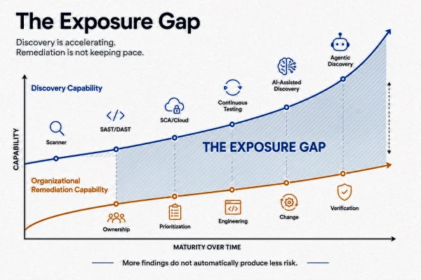
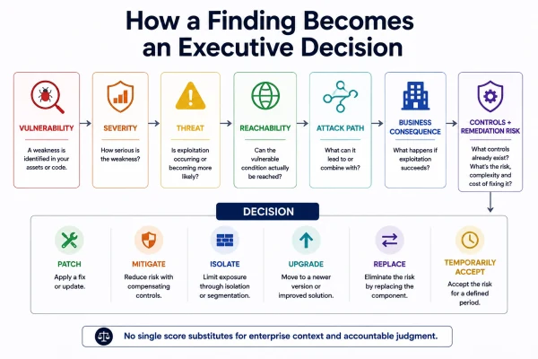
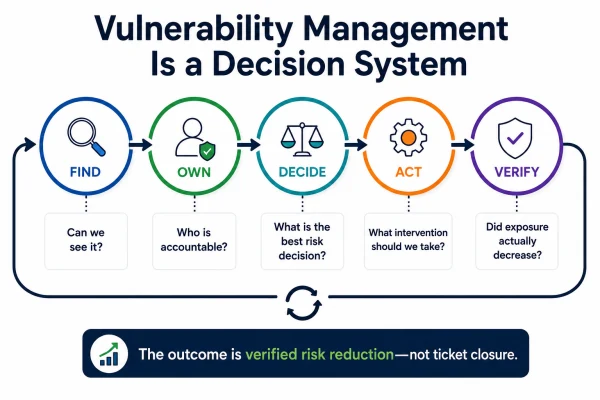

The next vulnerability-management problem may not be discovery. It may be everything that happens after discovery.
A few months ago, I thought I was going to write a research paper about AI-powered vulnerability discovery.
I started looking backward before looking forward.
How did we get from traditional vulnerability assessment and fuzzing to symbolic execution, machine-learning-assisted analysis, LLMs, and now security agents capable of using tools, reasoning about code, generating hypotheses, and attempting to validate what they find?
The technology is fascinating.
But while following that evolution, I found myself becoming more interested in a different question:
What happens if we become dramatically better at finding vulnerabilities—but remain just as slow at fixing them?
That question has stayed with me.
Because most mature enterprises today do not suffer from a lack of ways to generate security findings.
We have vulnerability scanners.
SAST.
DAST.
Software composition analysis.
Container scanning.
Cloud-security platforms.
Penetration testing.
Bug bounty programs.
External attack-surface management.
Threat intelligence.
And increasingly, AI-assisted security analysis.
A 2026 IEEE survey of LLM-based cybersecurity agents describes research spanning source-code auditing, fuzzing, penetration testing, vulnerability hypothesis formation and verification.[1]
Another recent review specifically examines how generative and learning models are beginning to influence vulnerability-management workflows.[2]
So the direction of travel is fairly clear:
our capacity to discover weakness is expanding.
Yet one sentence remains remarkably familiar inside large organizations:
“We found this months ago. Why is it still open?”
That, to me, is where the more interesting vulnerability-management problem begins.
We may have misunderstood the bottleneck
There is an assumption buried inside many security programs:
better discovery = better security.
Not necessarily.
Better discovery gives us better knowledge of weakness.
Something else has to convert that knowledge into actual risk reduction.
That “something else” includes:
· ownership;
· prioritization;
· engineering capacity;
· architecture;
· incentives;
· change windows;
· business criticality;
· governance;
· and executive decisions.
The scanner can tell you that a condition exists.
It cannot make the organization care.
It cannot assign business ownership.
It cannot create an engineering window.
It cannot decide whether taking a system offline is safer than leaving the vulnerability temporarily exposed.
It cannot decide whether an exception is reasonable.
Those are organizational decisions.
And increasingly, I think this distinction matters more than the sophistication of the scanner.

The stack changed. Did vulnerability management?
The modern product stack is not simply “our code running on our servers.”
A product might include:
proprietary code,
open-source packages,
commercial libraries,
container images,
cloud services,
managed databases,
third-party APIs,
infrastructure-as-code,
identity platforms,
and components maintained by different engineering teams.
Then companies acquire other companies.
Now vulnerability management gets even more interesting.
An acquisition does not merely inherit revenue, people and technology.
It can inherit:
· architectural decisions;
· technical debt;
· unsupported components;
· open-source dependencies;
· release practices;
· legacy platforms;
· engineering culture;
· security maturity;
· and a completely different philosophy about acceptable technology risk.
This is something I have seen in practice.
You can place the same vulnerability-management platform across two organizations.
Apply the same severity categories.
The same policy.
The same remediation expectations.
And get completely different outcomes.
One team considers a security defect part of normal engineering quality.
Another sees it as a ticket created by the security team.
One releases continuously.
Another needs multiple approvals before touching production.
One has clear application ownership.
Another has technology that survived several organizational changes while ownership quietly disappeared.
The scanner sees the same vulnerability.
The organization does not experience the same remediation problem.
That leads me to one of the principles behind this series:
The finding can be standardized. The ability to act on it cannot be assumed.
And therefore:
Standardizing vulnerability discovery is considerably easier than standardizing accountability and action.
A scanner cannot create ownership
Consider a scenario that will be familiar to many security leaders.
Security identifies an important vulnerability.
It is validated.
A ticket is created.
The application team says the component belongs to the platform team.
The platform team says it came from a vendor.
The vendor says remediation requires an upgrade.
Operations says the upgrade needs downtime.
The business says downtime is not acceptable this quarter.
Someone eventually creates a risk exception.
Three months later, the vulnerability remains.
Look carefully at what happened.
The scanner worked.
The ticketing integration worked.
The SLA measured the issue.
The dashboard reported it.
The process may even show the correct status.
Yet the exposure remains.
That is not primarily a vulnerability-detection failure.
It is an operating-model failure.
Which leads me to another principle:
A vulnerability without an accountable owner is not being managed. It is being observed.
And “owner” needs more precision than we sometimes give it.
For a consequential exposure, I want to know:
Who owns the technology?
Who understands the system and can change it?
Who can execute the remediation?
That may be a platform, engineering or vendor team.
Who owns the affected business service?
Because remediation itself may create business consequences.
Who has authority to accept the residual risk?
Because security should not silently inherit ownership of every risk it discovers.
Those might be four different people.
That is not necessarily a problem.
The problem is when nobody can name them.
Executive attention changes behaviour
Almost every organization already has a policy telling people to fix vulnerabilities.
So why do serious findings remain open?
Because vulnerability remediation competes against other objectives.
Engineering is measured on delivery.
Operations is measured on availability.
Product is measured on roadmap.
Commercial teams are measured on growth.
Then security arrives asking for another priority.
What wins?
Usually, what the organization has made important.
Compare these two statements:
“Policy requires Critical vulnerabilities to be remediated within 30 days.”
and:
“Reducing material cyber exposure is an enterprise objective. Leaders responsible for systems creating material exposure are accountable for reducing it, and unresolved material risk is reviewed through normal management governance.”
They may address the same vulnerabilities.
But they create very different management conversations.
This does not mean tying executive compensation directly to raw vulnerability counts.
I would avoid doing that.
It creates obvious incentives to optimize the number instead of the risk:
close easy findings;
argue classifications;
exclude difficult assets;
rush unsafe changes;
or spend scarce engineering capacity on issues that improve the metric but barely change exposure.
The better leadership question is:
Have we made the people who control the risk outcome accountable for the outcome—not merely informed about it?
Accountability without authority does not work.
Authority without accountability is equally dangerous.
“Fix every Critical” sounds good. It still isn’t a strategy.
This is usually where someone says:
“Enough complexity. Fix all Critical vulnerabilities.”
I understand the instinct.
It is simple.
It is measurable.
And sometimes it is exactly the right instruction.
But as an enterprise operating model, it is incomplete.
CVSS provides a standardized way to communicate characteristics associated with vulnerability severity.
Importantly, FIRST’s CVSS v4.0 guidance explicitly reinforces that CVSS should not be reduced to the Base score alone.[3]
That is worth paying attention to.
Exploit likelihood is a different question.
EPSS was developed to estimate the probability that a published vulnerability will be exploited in the wild.[4]
Known exploitation is different again.
CISA’s Known Exploited Vulnerabilities catalog identifies vulnerabilities for which there is evidence of exploitation and is intended to support prioritization.[5]
Research predating both today’s AI systems and many modern exposure products also demonstrated that vulnerability severity and observed exploitation should not simply be treated as the same thing.[6]
And none of those signals, by themselves, can tell you everything about your organization.
They do not completely answer:
Is the vulnerable condition reachable in our deployment?
Is the asset externally exposed?
What authentication is required?
What privilege could exploitation provide?
What other weaknesses could it be chained with?
What business process depends on this service?
What compensating controls exist?
What happens if we patch it tomorrow and break production?
Those are enterprise-context questions.
So I find this distinction useful:
Severity is not threat.
Threat is not exposure.
Exposure is not business impact.
And therefore:
Vulnerability priority should not be treated as a synonym for vulnerability severity.

Vulnerability management as a decision system
NIST’s enterprise patch-management guidance describes patching as a lifecycle that includes identifying, prioritizing, acquiring, installing and verifying patches and updates.[7]
For the broader vulnerability-management problem, I use an intentionally simple model:
FIND → OWN → DECIDE → ACT → VERIFY
I expect to use this model repeatedly throughout this series.
Not because cybersecurity needs another acronym.
Because each stage exposes a different kind of organizational failure.
FIND
Can we reliably identify the relevant weakness?
Infrastructure.
Applications.
Open-source dependencies.
Containers.
Cloud.
APIs.
External services.
And increasingly, weaknesses surfaced through AI-assisted analysis.
Discovery remains essential.
But discovery is only admission into the process.
OWN
Who is accountable for what happens next?
Not a queue.
Not a mailbox.
Not “Technology.”
Not “Engineering.”
An accountable role.
A materially important asset with no meaningful owner already represents a governance problem—even before we discuss its vulnerabilities.
DECIDE
What should actually happen?
This requires context.
At minimum, I want to understand:
· severity;
· exploitation evidence;
· likelihood;
· reachability;
· business criticality;
· attack-path context;
· compensating controls;
· remediation complexity;
· and operational consequence.
Recent vulnerability-management research continues to examine ways of combining contextual signals instead of relying on static severity alone.[8]
ACT
Patching is one intervention.
It is not the entire remediation vocabulary.
Depending on the situation, an organization may:
patch;
upgrade;
reconfigure;
disable functionality;
restrict network access;
reduce privilege;
segment or isolate;
replace the technology;
apply a compensating control;
or, in defined circumstances,
temporarily accept the residual risk.
The important word is temporarily.
Risk acceptance should be a decision.
Not simply the final resting place of an old vulnerability ticket.
VERIFY
This is where administrative success and security success can diverge.
A ticket marked:
CLOSED
proves that the workflow changed state.
It does not necessarily prove that the exposure disappeared.
Did the patch actually reach production?
Did the vulnerable component disappear?
Was the container rebuilt from the same vulnerable image next week?
Did configuration drift restore the condition?
Did a compensating control actually break the attack path?
Did we fix one server while leaving the flawed deployment pipeline untouched?
This is why:
Ticket closure is not the outcome. Verified exposure reduction is the outcome.

When remediation stalls, diagnose the bottleneck before buying another tool
One of the reasons vulnerability-management programs become expensive is that organizations apply the same response to very different problems.
A more useful diagnostic looks like this.
Nothing is moving because nobody owns it
You have an ownership problem.
Response: establish accountable technical, service and residual-risk ownership.
Everyone agrees—but nothing happens
You probably have a priority or incentive problem.
Response: move material exposure into normal technology and business governance instead of managing it only inside the security function.
Everything is Critical
You have a prioritization problem.
Response: bring in exploitation evidence, reachability, architecture and business consequence.
Engineering says the patch is too risky
You have an operational or architectural problem.
Response: compare patching honestly against isolation, restriction, mitigation, upgrade or replacement.
The answer may still be “patch immediately.”
But now it is a decision rather than a reflex.
An acquired company cannot meet the parent company’s process
You may have an integration problem, not simply a compliance problem.
Response: establish minimum security outcomes first.
Know the critical assets.
Know the exposure.
Know ownership.
Know escalation authority.
Know what risk cannot be accepted locally.
Then mature implementation.
Trying to force identical processes across completely different technology cultures can produce compliance theatre without equivalent risk reduction.
The same vulnerabilities keep returning
You have a root-cause problem.
Response: stop fixing individual manifestations.
Fix the base image.
The dependency.
The deployment pipeline.
The golden image.
The platform configuration.
The engineering pattern.
This is where vulnerability management starts becoming architecture.
Exceptions never disappear
You have a risk-governance problem.
Response: every material exception should have:
an owner,
an expiry,
a rationale,
a compensating-control expectation,
and conditions that force reassessment.
I increasingly think of this as a risk-acceptance half-life:
the older the exception becomes, the less comfortable we should be assuming that its original threat, architecture and business assumptions are still valid.
What should a CISO measure instead?
I would not stop measuring vulnerability counts.
They remain useful operational information.
But I would stop pretending the count alone tells me whether the organization is becoming safer.
I would want to see at least these questions answered.
1. What are our materially consequential exposures?
Not merely the highest scanner scores.
2. How many have accountable owners?
Technical owner.
Service owner.
Residual-risk owner.
3. How quickly do we reach a decision?
There is a meaningful difference between:
“It took us 60 days to decide what to do.”
and:
“We decided on Day 2, implemented a mitigation on Day 3, and scheduled the permanent change for Day 60 because of validated operational constraints.”
The ticket age may look similar.
The risk-management maturity is not.
4. How long does material exposure remain present?
I care about exposure age, not simply ticket age.
5. Where do exceptions concentrate?
If one technology, product, platform or business unit creates repeated exceptions, the dashboard may be telling us something architectural.
6. What keeps recurring?
If a vulnerability class repeatedly returns, the organization may be treating symptoms.
7. Are we removing consequential exposure faster than we create it?
This is a leadership concept I want to explore further in this series.
I call it:
Exposure Velocity
It is not an established industry metric.
It is a proposed management lens.
Conceptually:
Exposure Removal Velocity > Exposure Creation Velocity
If that is not true over time, a program may close thousands of findings while its underlying risk position continues to deteriorate.
That is a conversation worth having with executives.
And this brings me back to AI
This was the research question that started everything.
Where is AI taking vulnerability discovery?
Current research does not justify claiming that autonomous AI has “solved” vulnerability discovery.
Far from it.
Recent surveys still identify issues including hallucination, context limitations, cost, evaluation quality and the need for verification.[1]
Earlier machine-learning research also demonstrated how vulnerability-detection results can be distorted by dataset design and experimental methodology.[9]
So this deserves healthy skepticism.
But the trajectory is important.
AI systems are becoming more capable of:
reading large amounts of code;
using security tools;
generating test cases;
reasoning across execution feedback;
forming vulnerability hypotheses;
and helping verify findings.
Even if those capabilities improve gradually rather than exponentially, the management implication is still important.
Imagine discovery capacity doubles.
Now imagine remediation capacity does not.
Ownership stays unclear.
Engineering capacity stays constrained.
Prioritization remains primarily severity-driven.
Exceptions remain permanent.
And leadership continues measuring ticket closure.
We have not solved vulnerability management.
We have simply created a more efficient mechanism for discovering the size of the problem.
Which leads me to the hypothesis behind this series:
The scarce resource in vulnerability management may increasingly shift from discovery capability to organizational capacity to make and execute good risk decisions.
That is not primarily a scanner problem.
It is a leadership problem.
And increasingly, an architecture problem.
Five questions I would ask Monday morning
If I were reviewing a vulnerability-management program tomorrow, I would not begin with:
“How many Critical vulnerabilities do we have?”
I would ask:
1. Show me the ten exposures that could create the greatest plausible business consequence—not simply the ten highest CVSS scores.
2. For each one, show me the technical owner, service owner and person authorized to own the residual risk.
3.For every one that remains unresolved, tell me exactly why. No owner?No patch? No capacity? Vendor dependency? Architecture? Operational consequence? Business decision?
Each answer implies a different intervention.
4. If we cannot patch it tomorrow, what are our real alternatives? Can we isolate? Restrict? Reconfigure? Reduce privilege? Disable functionality? Upgrade?Replace?
5.Show me evidence—not a workflow status—that the exposures reported as remediated are actually gone.
Those five answers would tell me more about the maturity of a vulnerability-management program than another dashboard filled with red, amber and green numbers.
Why I am writing this series
I don’t want to produce another sequence of:
“10 Vulnerability-Management Best Practices.”
There are enough of those.
I want to work through the decisions security and technology leaders actually face when the textbook answer meets enterprise reality.
When should a Critical vulnerability not be first in the queue?
Who really owns vulnerability risk when five teams touch the same system?
Should remediation influence executive performance objectives?
How do we do that without creating destructive incentives?
What happens when the acquired company’s technology and culture cannot meet the parent company’s standard?
When does a temporary exception become permanent unmanaged debt?
Should attack paths matter more than vulnerability counts?
When is a compensating control genuinely good enough?
What should the board see on one slide?
What should the CISO stop measuring?
And eventually:
What happens when machines can discover weaknesses faster than organizations can decide what to do with them?
A product company in India, a SaaS provider in the United States, a digital enterprise in the UAE and a global industrial organization will not answer every one of those questions identically.
They should not.
Their architecture differs.
Their regulatory environment differs.
Their operational constraints differ.
Their business consequences differ.
What should remain consistent is the quality of the decision.
The standard I want this series to hold is therefore not:
“Did we follow the vulnerability-management process?”
It is:
“Given what we knew about the threat, architecture, business consequence, existing controls and available options, did we make a defensible decision—and can we demonstrate that it actually reduced risk?”
That is where I believe vulnerability management needs to go.
Not:
more findings → more tickets.
But:
FIND → OWN → DECIDE → ACT → VERIFY
From vulnerability discovery to accountable, verified risk reduction.
That is where this series begins.
Next in the series
CVSS 10 ≠ Business Risk 10
Why severity, exploitability, reachability and business consequence are different questions—and the prioritization framework I would actually put in front of a CISO.
References and evidence base
[1] Addis, R., Porter, K., Ryan, J., Stull, M., Xu, S., et al. (2026). LLM-Based Intelligent Agents for Cybersecurity: A Tutorial and Survey of Automated Vulnerability Discovery. IEEE. IEEE Xplore
[2] Siewruk, G., & Berej, M. (2026). Transformation of Vulnerability Management through Artificial Intelligence: An Overview of Generative and Learning Models. IEEE Access. IEEE Xplore
[3] FIRST. Common Vulnerability Scoring System Version 4.0. FIRST explicitly notes that CVSS should not be considered only through its Base score. FIRST CVSS v4.0
[4] Jacobs, J., Romanosky, S., Edwards, B., Adjerid, I., & Baker, W. (2021). Exploit Prediction Scoring System (EPSS). Digital Threats: Research and Practice, 2(3). DOI
[5] Cybersecurity and Infrastructure Security Agency. Known Exploited Vulnerabilities Catalog. CISA KEV
[6] Allodi, L., & Massacci, F. (2014). Comparing Vulnerability Severity and Exploits Using Case-Control Studies. ACM Transactions on Information and System Security, 17(1). DOI
[7] Souppaya, M., & Scarfone, K. (2022). Guide to Enterprise Patch Management Planning: Preventive Maintenance for Technology. NIST Special Publication 800-40 Revision 4. NIST
[8] Shimizu, N., & Hashimoto, M. (2026). Vulnerability Management Chaining: An Integrated Framework for Efficient Cybersecurity Risk Prioritization. IEEE Access. IEEE Xplore
[9] Chakraborty, S., Krishna, R., Ding, Y., & Ray, B. (2021). Deep Learning Based Vulnerability Detection: Are We There Yet? IEEE Transactions on Software Engineering. IEEE Xplore
Additional critical perspective: Howland, H. (2023). CVSS: Ubiquitous and Broken. Digital Threats: Research and Practice. DOI